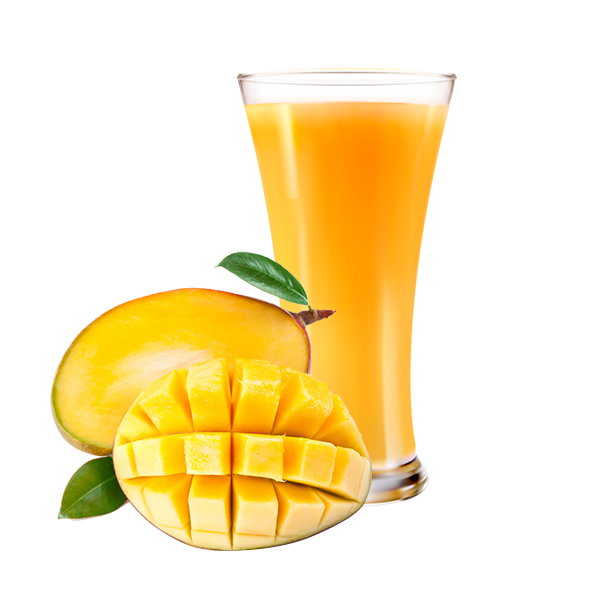
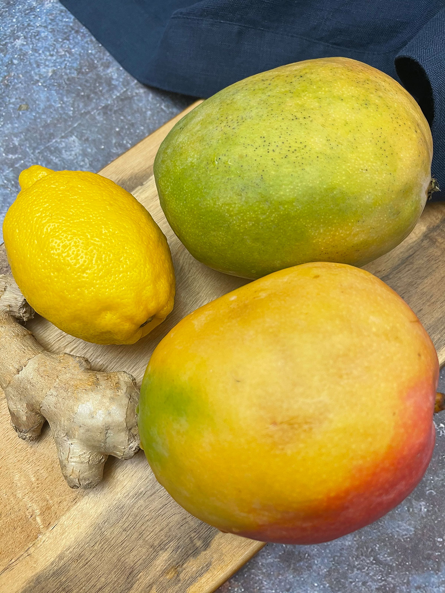
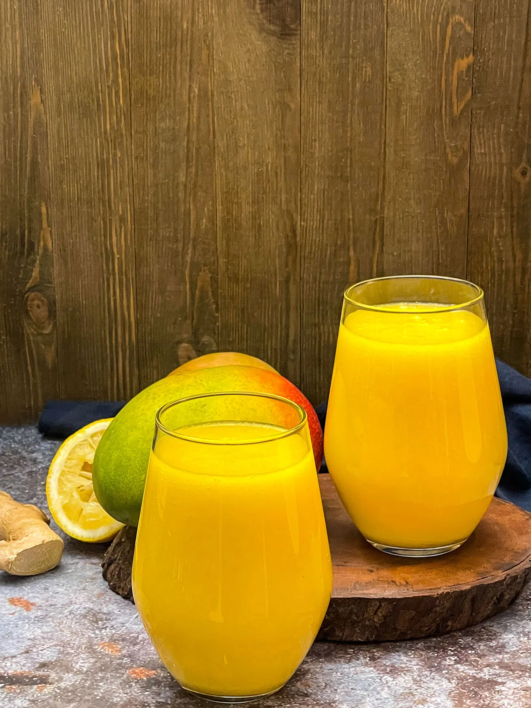

Mango Juice

The vitamins A, C, K, and B complex all improve your immune system, making a mango a day the most delicious supplement you could take during cold and flu season.
Mango is a stone fruit, meaning a fruit that has a large single pit in the middle, that originates from South Asia. It thrives in tropical weather, and through trade and migration has spread to most tropical areas and become a staple.
Instead of buying sugar and chemical-filled juices with little nutritional value, I love to drink freshly made juices, full of vitamins, minerals, and antioxidants. This Mango Juice is made from one of my favorite fruits, and with a hint of lemon and ginger, this drink is sure to blow your mind
Mango Fruit
Actually, most of my family members in Jamaica have mango trees in their backyards. Many in Caribbean immigrants in South Florida also have mango trees, and I love when friends bring me a basket full fresh from their trees.
Because of how common mangos are and how long they have been in many of these countries, there are hundreds of varieties, with wildly differing tastes, textures, appearances, and growth requirements.
Mango is probably one of the most popular “exotic” fruits, as a fruit that can only be grown in a small portion of the country but is a household name. In addition, most of our mangos do not come from Miami or Hawaii, but from Ecuador, Guatemala, Haiti, etc.
Benefits of Eating Mango

Mango contains lots of vitamin C, nearly all the vitamin A recommended in a day, and many other vitamins and minerals. It also is full of many antioxidants, making it a great choice to prevent inflammation and symptoms of aging.
The vitamins A, C, K, and B complex all improve your immune system, making a mango a day the most delicious supplement you could take during cold and flu season.
Most of All

Mangos are great for your digestive health because of their fiber content and digestive enzymes. If you suffer from chronic constipation and bloating, adding fiber will help, and again, with mango as your supplement who can complain?
Source:
https://healthiersteps.com/recipe/mango-juice/
All Comment